Flag football is a non-contact variation of American football in which players wear a belt or band around their waist with flags attached to each side. Instead of tackling an opposing player to the ground, defenders must remove one of the ball carrier's flags to end a play, making it a safer and more accessible alternative to traditional tackle football. The game retains all of the core elements that make football exciting — passing, rushing, receiving, and strategic play-calling — while eliminating the physical collisions that define the tackle version of the sport. Played on a smaller field with fewer players per side, typically five to eight depending on the league, flag football moves at a fast and dynamic pace that emphasizes speed, agility, and precision over brute strength. The sport is open to all ages and skill levels, from young children playing in recreational leagues to elite athletes competing in professional and international competitions. Its inclusive, low-barrier nature has made flag football one of the most popular and fastest-growing sports in the world, with millions of participants across all age groups, genders, and backgrounds enjoying the game in parks, schools, gyms, and stadiums globally.
Who
Anyone can play flag football including kids, adults, and recreational leagues.
About Me
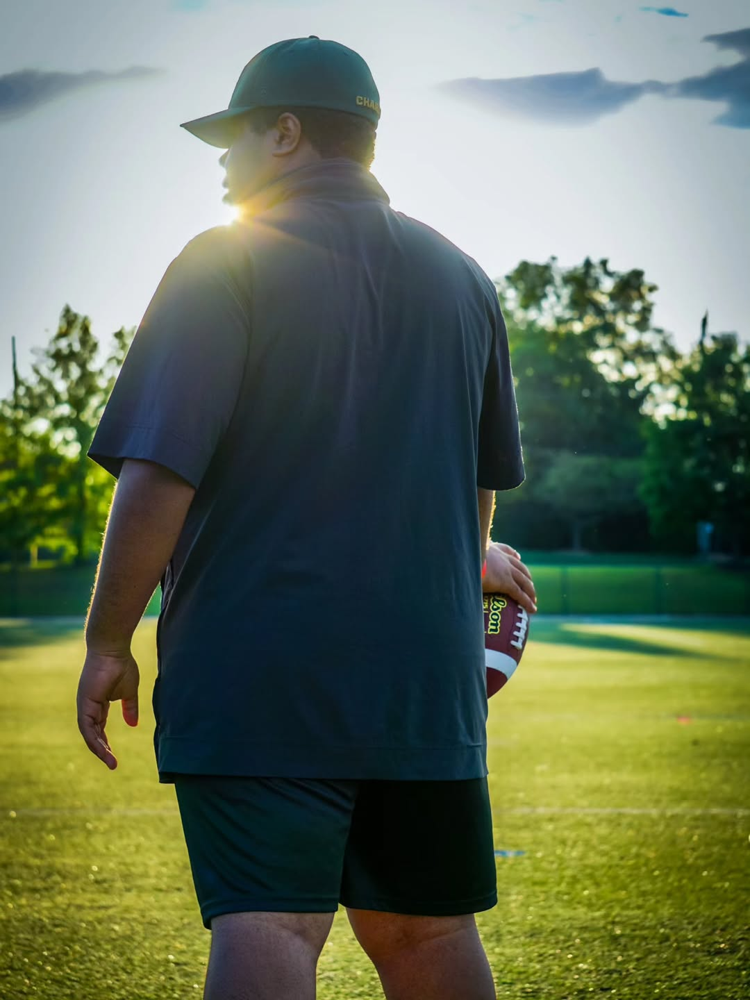
Me at practice
I started playing flag football when I got to college. I joined the Flag Football Club team at UNC Charlotte. Over the last 3 years, I have played both club and Intramural flag football. I have coached both the Mens and youth football teams and have refed a youth league.
Youth Flag Football
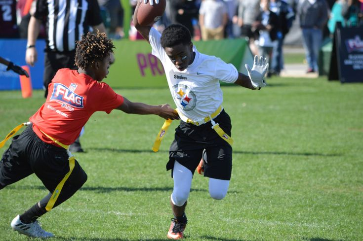
A youth flag football team
Flag football has become one of the fastest-growing youth sports in the United States, offering kids a safe and exciting introduction to the game of football without the physical contact of tackle. Players wear flags attached to their waist, and instead of tackling, defenders must pull an opponent's flag to stop the play. The sport develops fundamental athletic skills like speed, agility, hand-eye coordination, and teamwork, while also teaching kids the strategy and rules of football in a fun, accessible environment. With organizations like NFL FLAG leading the charge, millions of children ages 5 to 17 now participate in leagues across the country, making it a beloved option for parents who want their kids to enjoy the thrill of football in a lower-risk setting
College Flag Football
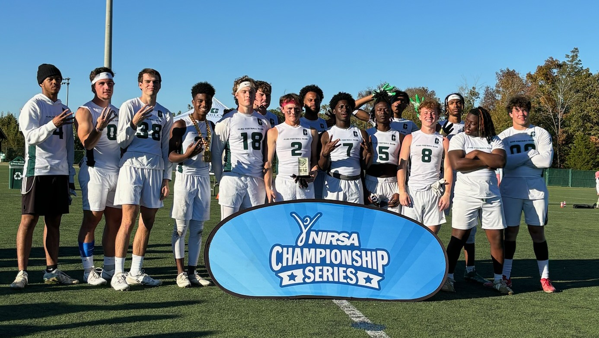
The Charlotte Mens Flag Team
College flag football is rapidly gaining momentum across campuses nationwide, evolving from a casual intramural activity into a more competitive and organized sport. Many universities now offer structured leagues and tournaments, giving students the chance to compete at a higher level while still enjoying the non-contact format of the game. The sport has seen a significant boost in visibility thanks to the NCAA, which officially recognized flag football as an emerging sport for women in 2021, paving the way for potential varsity programs and scholarships. Conferences and national championship events have further elevated the profile of college flag football, drawing larger crowds and media attention. With the inclusion of flag football in the 2028 Los Angeles Olympics on the horizon, the collegiate game is poised to become an even more prestigious pipeline for developing elite talent and expanding the sport's reach at the university level.
Professional Flag Football
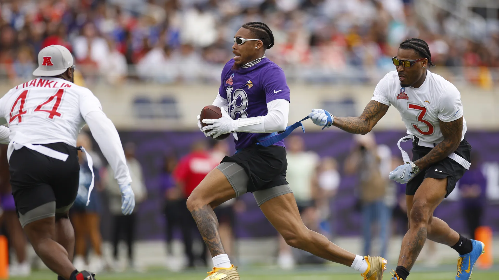
Flag Football at the Pro-Bowl
Professional flag football has exploded onto the sports scene in recent years, transforming from a recreational pastime into a legitimate spectator sport with serious athletes and major financial backing. The NFL FLAG Championships and the American Flag Football League (AFFL) have helped establish a competitive professional landscape, while the NFL itself has heavily invested in growing the game at the highest level. Star athletes, including many current and former NFL players, have embraced the professional flag football circuit, bringing star power and credibility to the sport. The formation of leagues like the Pro Flag Football League has created dedicated platforms for elite players to showcase their skills, compete for prize money, and build professional careers around the game. With flag football officially set to make its Olympic debut at the 2028 Los Angeles Games, the professional side of the sport is experiencing unprecedented growth in sponsorships, broadcasting deals, and global interest, signaling that professional flag football is no longer just a novelty but a serious and sustainable sporting enterprise.
When
Flag football leagues are commonly played in fall and spring seasons.
Flag Football in all seasons
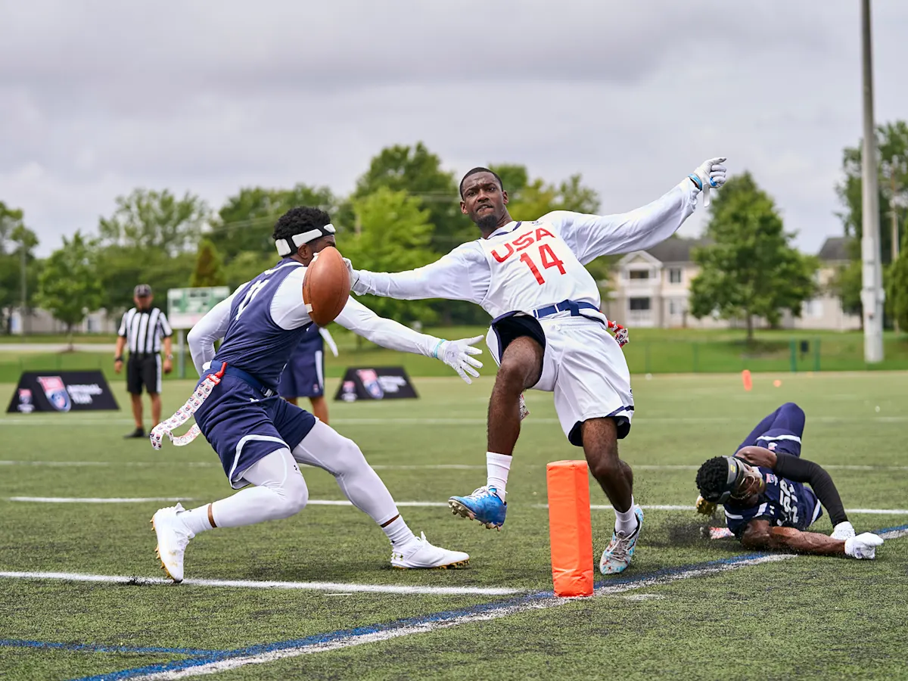
Playing Flag Football in the summer
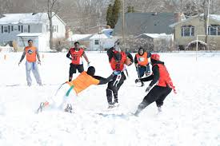
Flag Football being played during the winter
The best time to play flag football largely depends on the climate, location, and personal preferences of the players involved, but generally speaking, the sport thrives in mild, comfortable weather conditions. Fall is widely considered the ideal season for flag football, as cooler temperatures make for energetic, enjoyable gameplay without the heat exhaustion risks that can come with summer activity. The crisp autumn air, combined with the natural connection to the traditional football season, creates an atmosphere that feels perfectly suited for the sport. Spring is another excellent time to hit the field, offering warming temperatures and longer daylight hours that allow for evening games and extended practice sessions. Many recreational and competitive leagues are structured around these two seasons for exactly these reasons. While flag football can certainly be played year-round, extreme summer heat can make midday games uncomfortable and potentially dangerous, so early morning or evening kickoffs are recommended if playing during the warmer months. In regions with mild winters, the sport can be enjoyed throughout the entire year, and some leagues even embrace cold-weather play for the added challenge and excitement it brings. Ultimately, the best time to play flag football is whenever players are motivated, the weather is manageable, and the field is available — because at its core, flag football is a sport meant to be fun and accessible no matter the season.
Where to play flag football
Games are played in parks, school fields, and recreation centers.
Whether you're a seasoned veteran of the sport or a first-time player looking to get into the game, finding the right place to play flag football has never been easier. The sport's explosive growth in popularity means that fields, leagues, and facilities dedicated to flag football can be found in virtually every corner of the country. From local parks to professional-grade turf facilities, there are countless options available for players of all ages and skill levels.
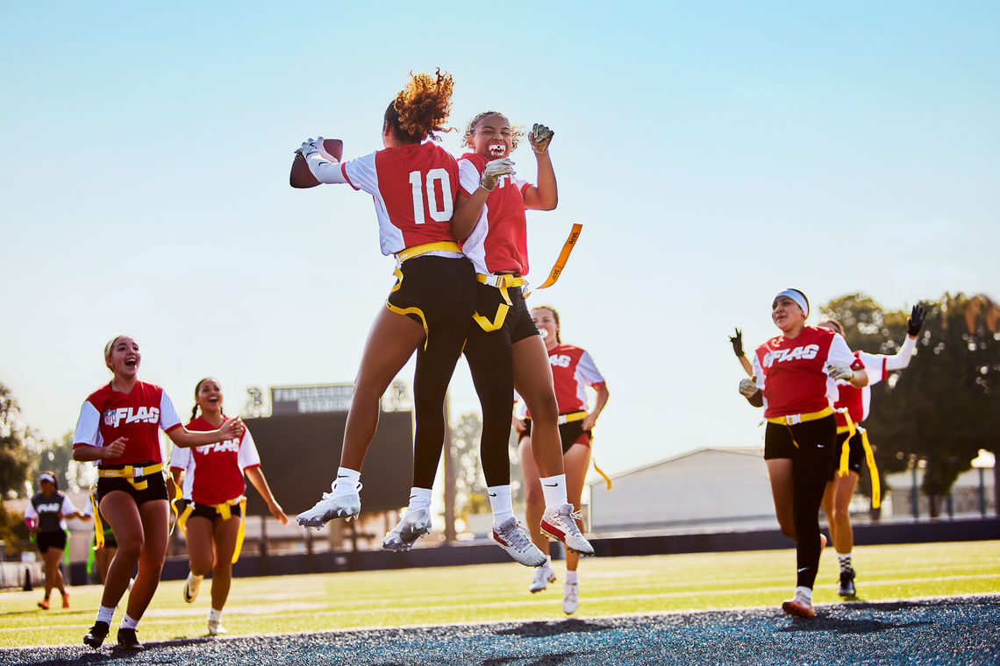
Local Parks and Recreation Centers
One of the most accessible and affordable places to play flag football is at your local park or community recreation center. Most public parks feature open grass fields that are perfectly suited for a casual pickup game or organized league play. Many city and county recreation departments offer structured flag football leagues for both youth and adults, providing a fun and organized environment for players to compete. These leagues are typically low-cost and beginner-friendly, making them a great starting point for those new to the sport.
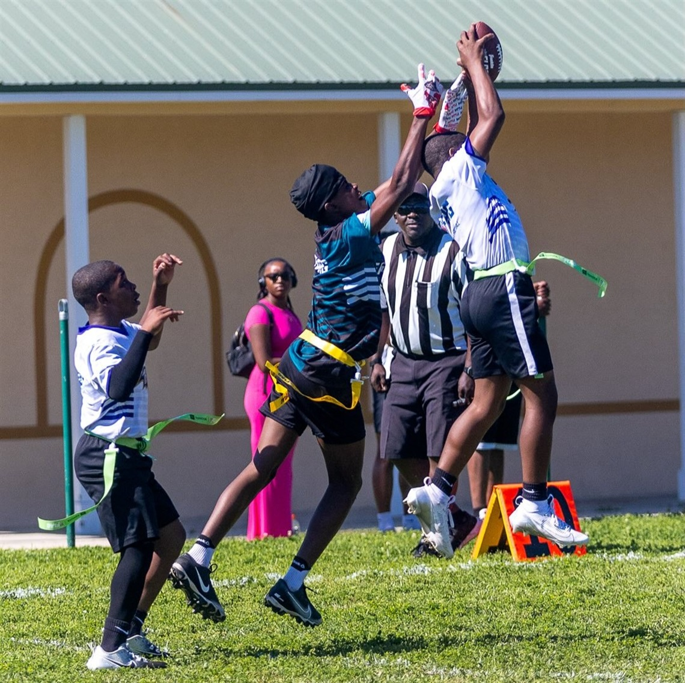
Schools and Universities
Elementary schools, middle schools, high schools, and universities are excellent venues for flag football. Many physical education programs have incorporated flag football into their curriculums, giving students regular access to the sport during school hours. After-school programs and intramural leagues at the college level offer even more opportunities for students to play competitively in a structured setting. School fields and gymnasiums provide ready-made spaces for games and practices, often available for community use during evenings and weekends.
How
Instead of tackling, defenders stop the play by pulling a flag from the runner.
The Basic Setup
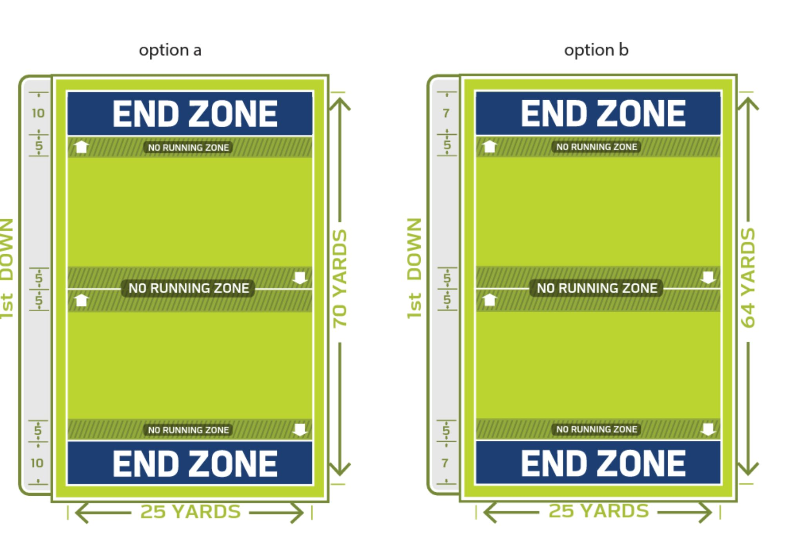
A Flag Football Field
The Field
Flag football is typically played on a rectangular field that is smaller than a standard NFL football field. Most flag football fields range from 50 to 80 yards in length and 25 to 35 yards in width, with end zones at each end where teams score touchdowns. The smaller field size keeps the action fast and ensures that every player stays involved in the game.
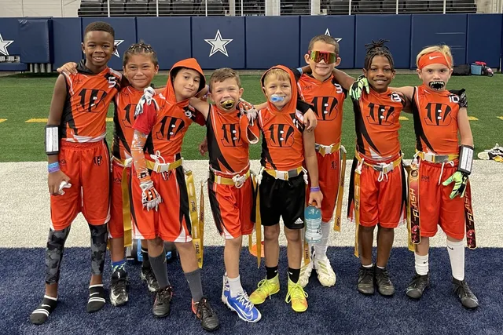
Cincinnati Bengals Youth Flag Football Team
The Teams
Most flag football formats feature teams of five to eight players on the field at one time, depending on the league and age group. Teams are divided into an offensive unit and a defensive unit, with each side taking turns trying to score or prevent scoring.
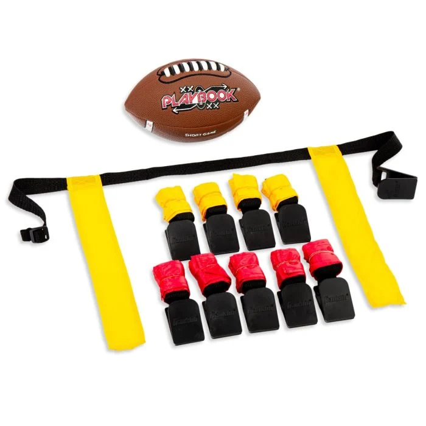
Flag Football Equipment
The equipment
Each player wears a flag belt around their waist with two flags attached — one on each hip. These flags are the central element that distinguishes flag football from tackle football. When a defender successfully pulls one of the ball carrier's flags, the play is considered dead and the action stops at that spot on the field.
How to Play
Starting the game
Most flag football games begin with a coin toss to determine which team will start on offense and which will start on defense. Depending on the league, the game may start with a kickoff or simply with the offensive team taking possession of the ball at a designated spot on the field.
Downs and Possessions
Like traditional football, flag football uses a system of downs to advance the ball. The offensive team has a set number of plays — typically four downs — to advance the ball past a midfield marker or into the end zone. If the offense successfully moves the ball past the first down marker, they are awarded a new set of downs. If they fail to do so within the allotted number of plays, possession of the ball is turned over to the opposing team.
Running plays
On a running play, the quarterback hands the ball off to another player who attempts to advance the ball up the field by running past defenders. The play ends when a defender successfully pulls the ball carrier's flag, the ball carrier steps out of bounds, or the ball carrier reaches the end zone for a touchdown.
Passing plays
Passing is one of the most exciting and widely used aspects of flag football. The quarterback drops back after the snap and attempts to throw the ball to an eligible receiver who has run a pass route downfield. Receivers must catch the ball in bounds and avoid having their flag pulled until they have advanced as far down the field as possible. Incomplete passes — those that hit the ground before being caught — result in no gain and the loss of a down.
Key Rules to Know
No Contact — Flag football is a non-contact sport. Blocking, tackling, shoving, and any form of physical contact are prohibited and will result in a penalty.
Flag Guarding — Ball carriers are not allowed to use their hands, arms, or the ball to protect their flags from being pulled. Flag guarding results in a penalty and loss of yards.
Offsides — Players on either team must not cross the line of scrimmage before the ball is snapped. Doing so results in an offsides penalty.
Pass Interference — Defenders cannot make contact with a receiver who is attempting to catch the ball. Pass interference results in a penalty and an automatic first down for the offense.
Illegal Flag Pull — Defenders may only pull the flag of a player who currently has possession of the ball. Pulling the flag of a player without the ball is an illegal flag pull and results in a penalty.
Touchdown Celebrations — While celebrating a touchdown is encouraged and part of the fun of the game, excessive or unsportsmanlike celebrations may result in a penalty depending on the league's rules.
Flag football provides the fun of football with a lower risk of injury.
Why You Should Play Flag Football
It is safe and accessible
Keeps you physically fit
It develops teamwork and communication skills
Fun for all ages
Supports youth development
Flag football is more than just a sport — it is a community, a lifestyle, and an opportunity to experience the joy of athletic competition in one of the most accessible and rewarding formats available. Whether you are drawn to the physical fitness benefits, the social connections, the strategic challenge, or simply the pure fun of the game, flag football delivers on every front. There has never been a better time to get involved, and the only thing standing between you and your first flag football experience is the decision to play. So find a league, grab your flags, and get out on the field — you will not regret it.